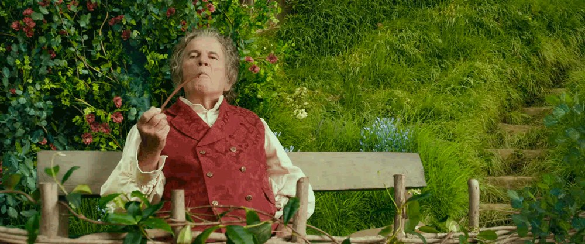

Web Design: Secondary Page
Home
Secondary Page
iFrames
Please don't actually watch this video, it's super cringe and old :D
Media Management

Random Video I had to plug into the project
Audio Book of Chapter 1